Quantification of electrophoresis gel bands using QuPath and Galaxy imaging tools
| Author(s) |
|
| Reviewers |
|
OverviewQuestions:
Objectives:
How can specific bands on an electrophoresis gel image be selected using QuPath?
How is a region of interest (ROI) GeoJSON file prepared?
How are bands labeled and quantified using Galaxy tools?
What outputs are generated during the analysis?
Requirements:
Learn how to select bands on an electrophoresis gel image
Generate ROI files in QuPath and process them in Galaxy
Quantify band intensity and extract tabular results
- Introduction to Galaxy Analyses
- tutorial Hands-on: FAIR Bioimage Metadata
- tutorial Hands-on: REMBI - Recommended Metadata for Biological Images – metadata guidelines for bioimaging data
- tutorial Hands-on: Introduction to Image Analysis using Galaxy
Time estimation: 1 hourSupporting Materials:Published: Aug 11, 2025Last modification: Aug 11, 2025License: Tutorial Content is licensed under Creative Commons Attribution 4.0 International License. The GTN Framework is licensed under MITpurl PURL: https://gxy.io/GTN:T00549version Revision: 1
Electrophoresis gel images are fundamental tools in molecular biology and biochemistry for separating DNA, RNA, or protein fragments by size or charge (Green and Sambrook 2019). Quantification of these bands allow for estimating product yield, comparing amplification efficiency, verifying PCR products, calculating molecular weights, and assessing enzyme activity or protein purity (Gallagher 2017).
Reliable measurement of band intensity provides quantitative insights into gene expression and other biochemical properties (Gassmann et al. 2009). However, manual quantification can be labor-intensive and prone to user bias.
Modern image analysis software suites such as QuPath (Bankhead et al. 2017) provide interactive tools for defining regions of interest (ROIs) directly on gel images. These ROIs can be exported as GeoJSON files, which encode the spatial coordinates of the selected bands in a standardized, machine-readable format.
Once the ROI file is generated, bioinformatics platforms like Galaxy (The Galaxy Community 2024) enable automated processing of these coordinates, measurement of pixel intensities for each band, and generation of transparent, reproducible quantification results.
Recent advances such as GelGenie (Aquilina et al. 2025) further highlight the trend towards AI-powered, automated analysis pipelines for electrophoresis gels, reinforcing the need for accessible, reproducible workflows that integrate modern image processing tools.
AgendaIn this tutorial, we will deal with:
Data preparation
The example dataset can be downloaded from here Electrophoresis gel dataset.
{kind=link}
{kind=link}
This image is from Ohgane and Yoshioka 2019.
Hands On: Download and upload the image
- Create a new history in Galaxy.
- Download the test image using the link above.
Click the galaxy-upload Upload to add the image file into your galaxy history.
- Copy the link location
Click galaxy-upload Upload at the top of the activity panel
- Select galaxy-wf-edit Paste/Fetch Data
Paste the link(s) into the text field
Press Start
- Close the window
As an alternative to uploading the data from a URL or your computer, the files may also have been made available from a shared data library:
- Go into Libraries (left panel)
- Navigate to the correct folder as indicated by your instructor.
- On most Galaxies tutorial data will be provided in a folder named GTN - Material –> Topic Name -> Tutorial Name.
- Select the desired files
- Click on Add to History galaxy-dropdown near the top and select as Datasets from the dropdown menu
In the pop-up window, choose
- “Select history”: the history you want to import the data to (or create a new one)
- Click on Import
- Click on the galaxy-pencil pencil icon for the dataset to edit its attributes
- In the central panel, click galaxy-chart-select-data Datatypes tab on the top
- In the galaxy-chart-select-data Assign Datatype, select
datatypesfrom “New Type” dropdown
- Tip: you can start typing the datatype into the field to filter the dropdown menu
- Click the Save button
- Rename galaxy-pencil the dataset to
Electrophoresis-Gel.jpg.
Before we dive into the quantification steps let’s convert our JPG image file into the TIFF image format. This format is preferred for analysis and quantification as it preserves the image data and metadata.
Note: Skip this step if the image is already in TIFF format.
Convert the image format
Hands On: Convert JPG to TIFF
- Convert image format ( Galaxy version 1.3.45+galaxy0)
- “Image to convert”:
Electrophoresis-Gel.jpg- “Output format”:
TIFFTIFF files preserve full image quality, avoid compression artifacts, and are compatible with downstream tools that require uncompressed data.
Obtain image metadata
To convert coordinates into a label map, we first need the image dimensions (width and height). In this step, we’ll retrieve that information.
Hands On: Identify image dimensions
- Show image info ( Galaxy version 5.7.1+galaxy1)
- param-file “Image Input”: Select your uploaded
Electrophoresis-Gel.tiff
The output of the tool can be visualize by clicking the galaxy-eye (eye) icon (View). See below:
Checking file format [Tagged Image File Format] Initializing reader TiffDelegateReader initializing /data/dnb11/galaxy_db/files/0/6/6/dataset_06685fae-ac3e-48b9-a460-d0ad39ea07a6.dat Reading IFDs Populating metadata Checking comment style Populating OME metadata Initialization took 0.569s Reading core metadata filename = /data/dnb11/galaxy_db/files/0/6/6/dataset_06685fae-ac3e-48b9-a460-d0ad39ea07a6.dat Series count = 1 Series #0 : Image count = 1 RGB = true (3) Interleaved = false Indexed = false (false color) Width = 1278 Height = 250 SizeZ = 1 SizeT = 1 SizeC = 3 (effectively 1) Thumbnail size = 128 x 25 Endianness = intel (little) Dimension order = XYCZT (certain) Pixel type = uint8 Valid bits per pixel = 8 Metadata complete = true Thumbnail series = false ----- Plane #0 <=> Z 0, C 0, T 0 Reading global metadata BitsPerSample: 8 Compression: JPEG Document Name: temp.tiff ImageLength: 250 ImageWidth: 1278 MetaDataPhotometricInterpretation: RGB MetaMorph: no NumberOfChannels: 3 PageNumber: 0 1 PhotometricInterpretation: YCbCr PlanarConfiguration: Chunky ReferenceBlackWhite: 0 SampleFormat: unsigned integer SamplesPerPixel: 3 Software: GraphicsMagick 1.3.45 2024-08-27 Q8 http://www.GraphicsMagick.org/ Reading metadata
Split image into separate channels
TIFF images can store multiple channels—such as different colors or fluorescence signals—in a single file. In this step, we will separate these channels by splitting the image along the channel axis (C-axis). This results in a list of single-channel images, which are required for the next processing steps.
Hands On: Split image into single channels
- Split image along axes ( Galaxy version 2.2.3+galaxy1) with the following parameters:
- param-file “Image to split”: Select your uploaded
Electrophoresis-Gel.tifffile- “Axis to split along”: Select
C-axis (split the channels of an image or image sequence)from the dropdown menu
Comment: Use a single-channel image for downstream compatibility and annotationWhile QuPath can handle multi-channel images, our other tools cannot. Therefore, after splitting the image, we will use the Extract Dataset tool to select one of the single-channel images. This image should represent the intensity channel we want to measure, and will be used for QuPath regions of interest (ROI) annotation.
Hands On: Extract the TIFF file from collection
- Extract Dataset with the following parameters:
- param-collection “Input Collection”: Select the collection output from the Split image along axes ( Galaxy version 2.2.3+galaxy1) tool
- “Which part of the Collection?”: Choose the TIFF file that represent the channel of your interest. In our dataset example, we extract 1.tiff
Annotate and process regions of interest (ROIs)
To identify and quantify specific regions in the image, such as electrophoresis bands, we need to define them manually. This is done using the interactive tool QuPath, which allows you to draw rectangles over each band of interest and assign them a unique label to annotate the ROIs. The result is a GeoJSON file containing the coordinates of these regions.
This GeoJSON file can then be processed in Galaxy to generate a label map for image quantification.
Prepare the ROI file with QuPath
In this step, you will open the image in QuPath, annotate the ROIs using rectangles, and export the annotations as a GeoJSON file. Each band should be marked with a rectangle and given a unique name (e.g., “1”, “2”, etc.).
Hands On: Select ROIs and export GeoJSON file
- Open the image in QuPath using our interactive tool QuPath with the following parameters:
- param-collection “Input file in TIFF format”: Select the
Electrophoresis-Gel.tiffdataset after channel splitting.When the image opens in QuPath, set the image type to
Other:
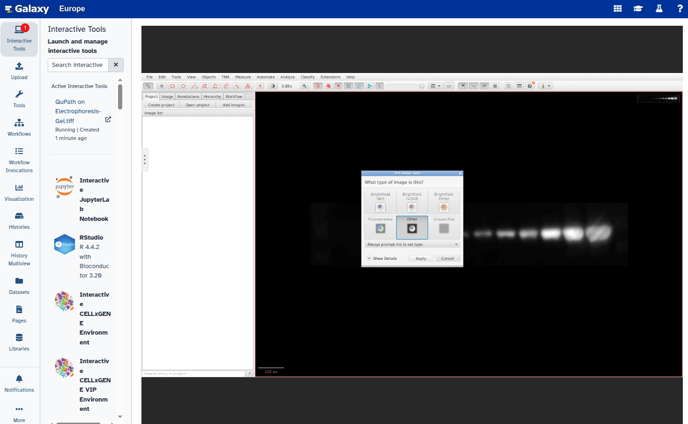
Select the Rectangle tool from the toolbar:
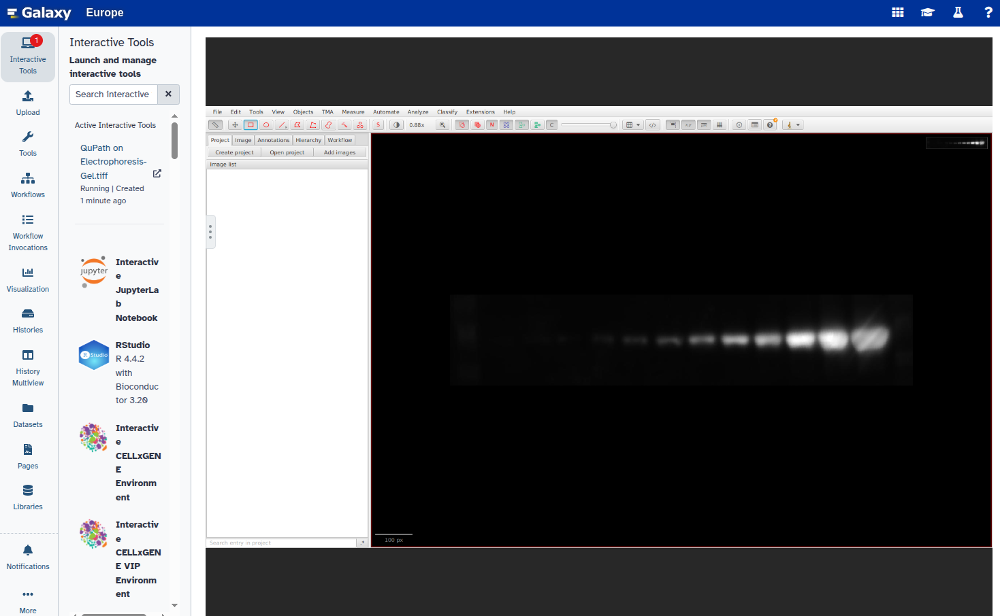
Draw a rectangle around the first band of interest:
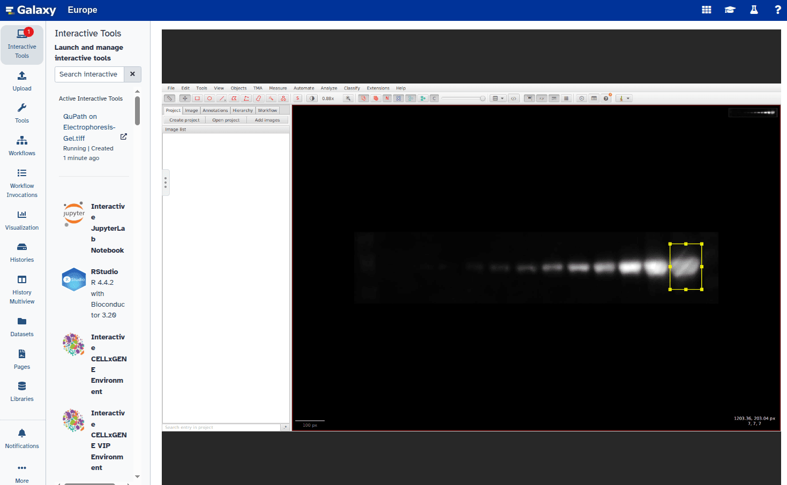
Double-click the rectangle and set its type to
Other:
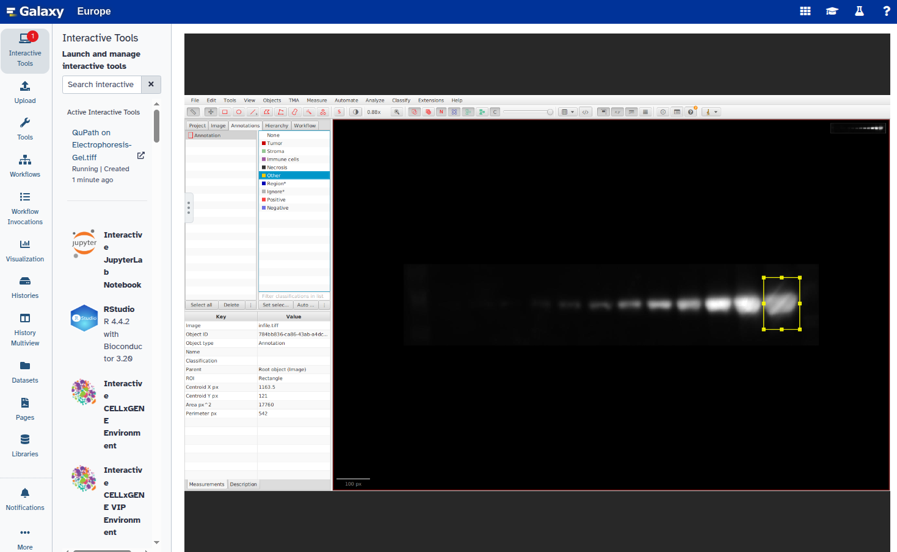
- Duplicate the annotation to create additional rectangles:
- Go to Object → Annotations
- Select Duplicate selected annotations
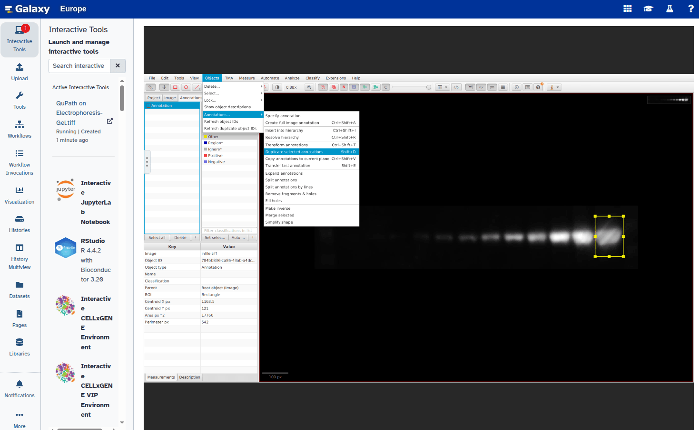
Select the new rectangle and reposition it over the next band:
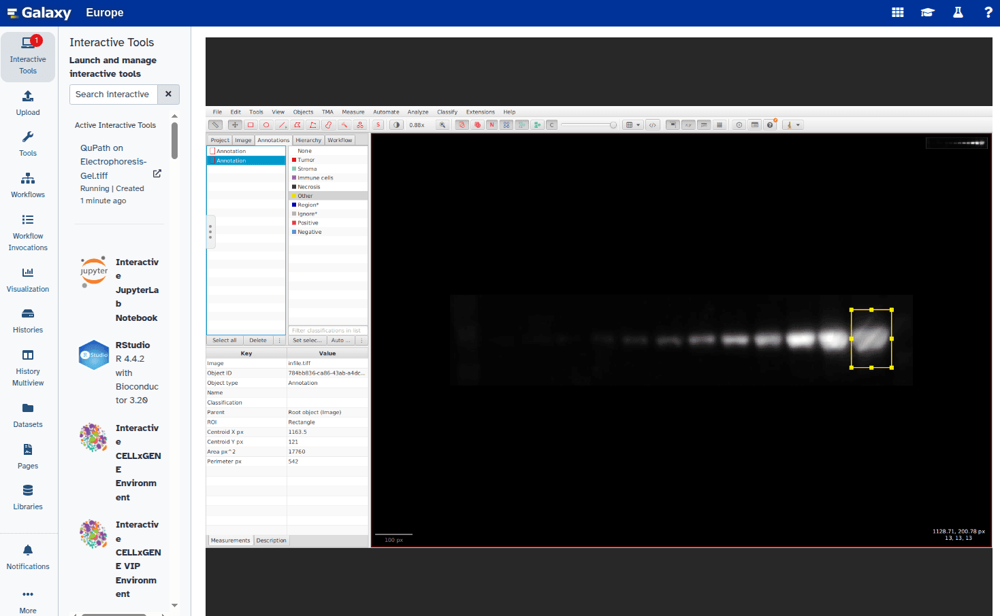
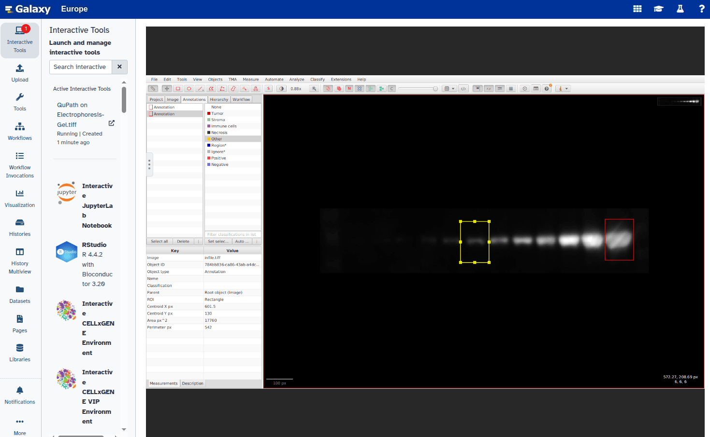
Repeat steps 6–8 for all bands you want to annotate.
- Set a unique label for each annotation:
- Right-click each rectangle, choose Set parameters, and enter a label (e.g.,
"1","2")
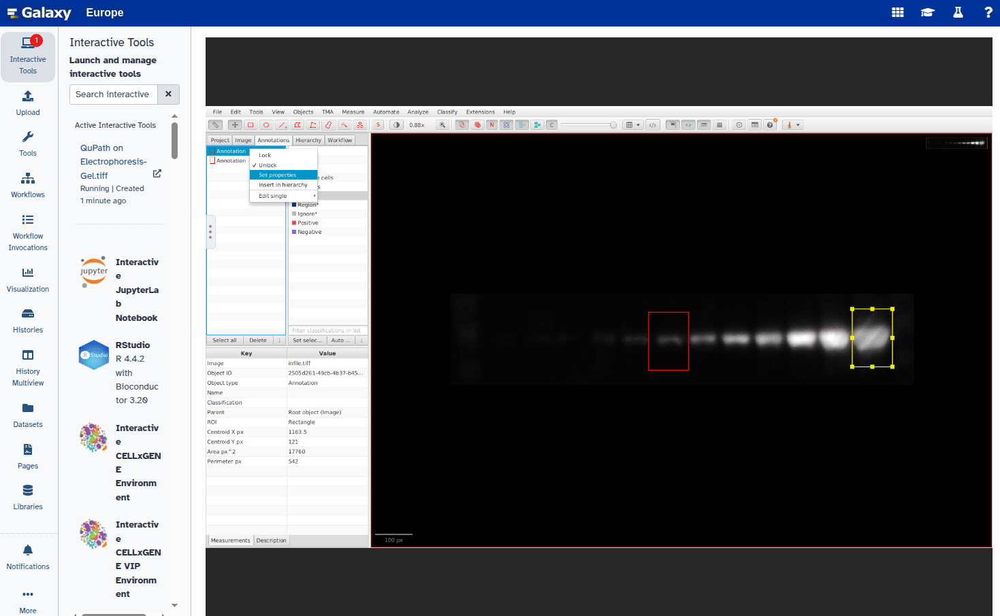
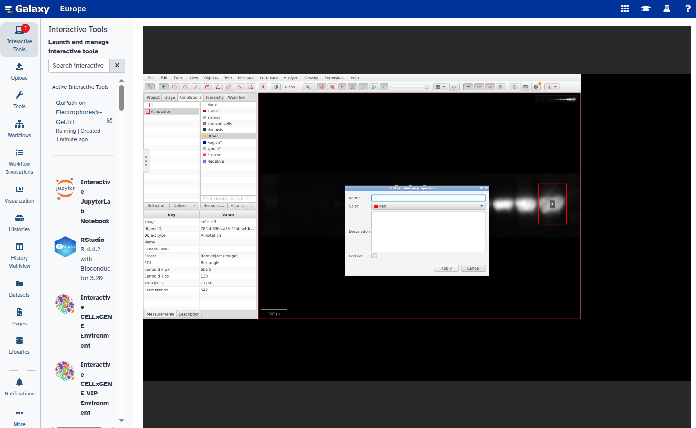
Confirm that all rectangles are labeled:
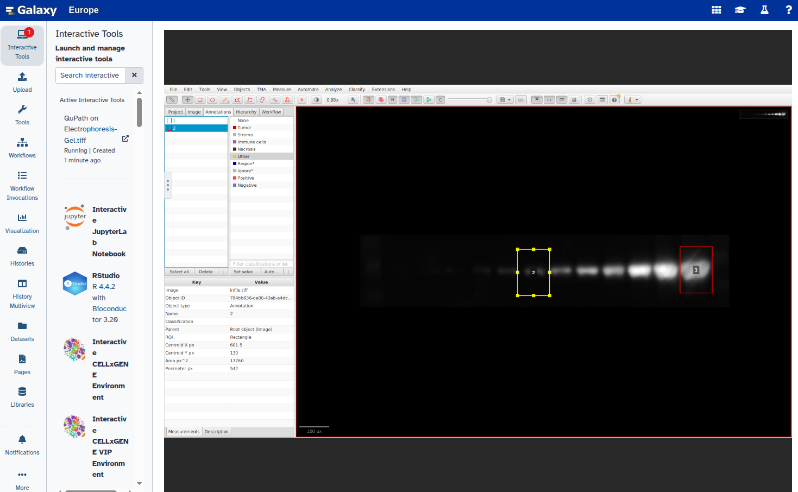
Select all labeled annotations:
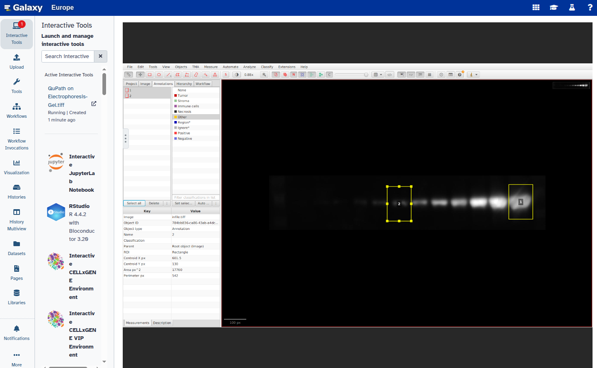
- Export the annotations as a GeoJSON file:
- Click File → Export objects as GeoJSON
- Choose Export as FeatureCollection
- Click Save
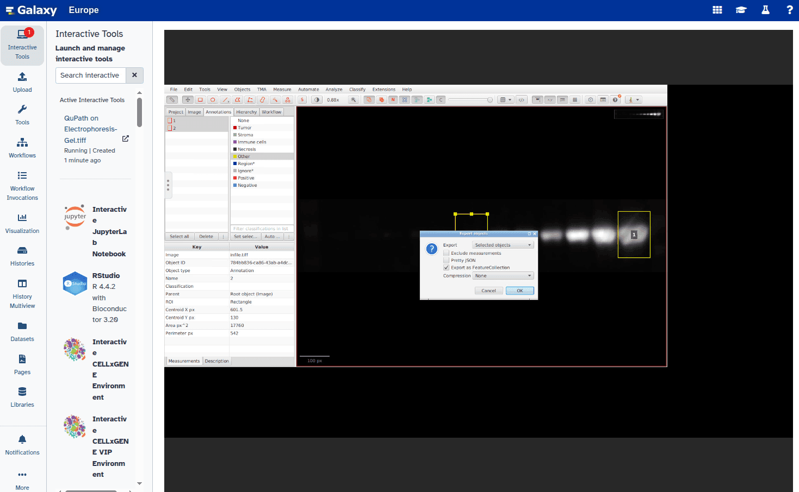
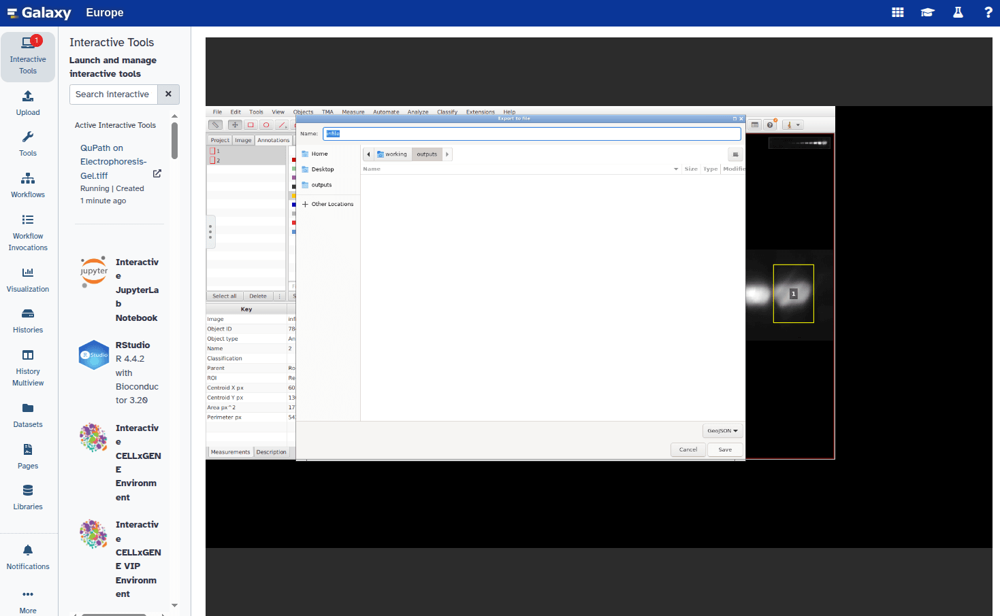
- Exit QuPath:
- Click File → Quit
- Save changes if prompted
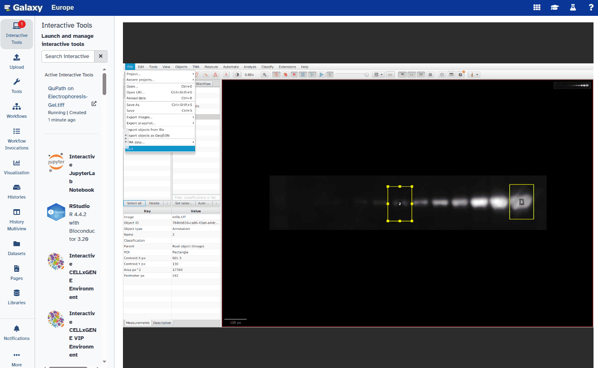
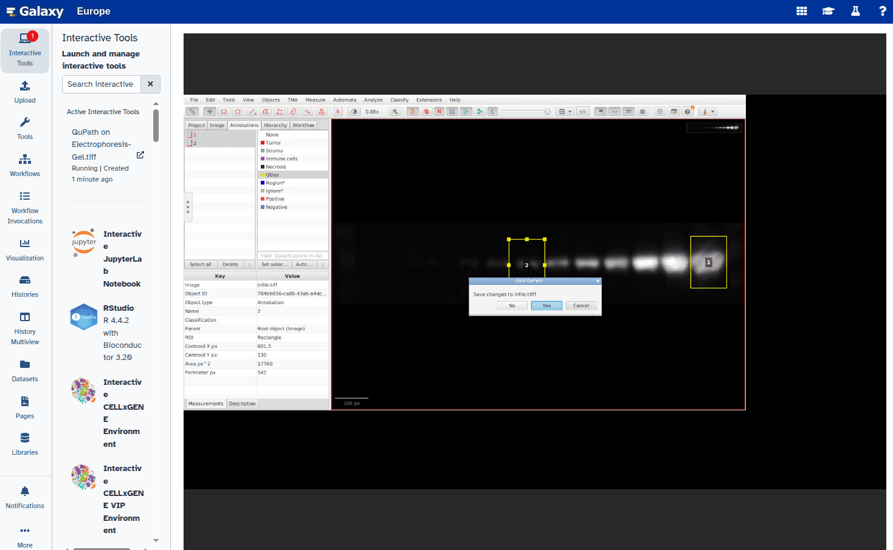
- The exported file will appear in your Galaxy history as part of a collection within 2–3 minutes.
{kind=link}
{kind=link}
{kind=link}
{kind=link}
{kind=link}
{kind=link}
{kind=link}
{kind=link}
{kind=link}
{kind=link}
{kind=link}
{kind=link}
{kind=link}
{kind=link}
{kind=link}
{kind=link}
{kind=link}
{kind=link}
{kind=link}
{kind=link}
Extract the GeoJSON file
QuPath exports the annotations as a Galaxy collection. In this step, we extract the GeoJSON file to use it in the next stage of the analysis.
Hands On: Extract the GeoJSON file
- Extract Dataset with the following parameters:
- param-collection “Input Collection”: Select the
QuPath outputscollection- “Which part of the Collection?”: Choose the GeoJSON file
- galaxy-pencil Rename the extracted file to
Bands.geojson.
Convert ROIs to label map
Now that we have the coordinate information in GeoJSON format, we can convert it into a label map. This label map is an image where each ROI is assigned a unique label, allowing it to be quantified or visualized in downstream steps. In this step, you will also need the information obtained earlier with the Show image info ( Galaxy version 5.7.1+galaxy1) tool about the width and height of the image.
Hands On: Convert coordinates to label map
- Convert coordinates to label map ( Galaxy version 0.4.1+galaxy1) with the following parameters:
- param-file “List of points in tabular or GeoJSON format”: Select your
Bands.geojsonfile- “Width of output image”:
1278(Use the width from the Show image info result)- “Height of output image”:
250(Use the height from the Show image info result)- “Tabular list of points has header?”:
Yes
Extract band intensity features
Hands On: Measure band intensity
- Extract image features ( Galaxy version 0.18.1+galaxy0)
- “Label map”: Output from previous step
- “Use the intensity image”:
Use intensity image- “Intensity image”:
Electrophoresis-Gel.tiff- “Features to compute”:
- Select: “Label from label map”
- Select: “Mean Intensity”
Inspecting results
The table result can be inspected by clicking on the galaxy-eye (eye) icon (View) of the tool output and used for further analysis.
Conclusion
In this tutorial, we explored a complete workflow for quantifying electrophoresis gel bands by:
- Uploading and converting the gel image into a suitable format
- Interactively selecting bands as regions of interest (ROIs) using QuPath
- Exporting ROI coordinates and converting them into a label map in Galaxy
- Measuring the intensity of each band and extracting the results in tabular format
By combining QuPath for annotation and Galaxy for analysis, this approach offers a transparent, reproducible, and user-friendly method for gel band quantification, suitable for a variety of molecular biology applications.
You've Finished the Tutorial
Key points
ROIs can be selected in QuPath and processed with Galaxy tools
Gel bands are quantified automatically and intensity values can be visualized
Frequently Asked Questions
Have questions about this tutorial? Have a look at the available FAQ pages and support channelsUseful literature
Further information, including links to documentation and original publications, regarding the tools, analysis techniques and the interpretation of results described in this tutorial can be found here.
References
- Gassmann, M., B. Grenacher, B. Rohde, and J. Vogel, 2009 Quantifying Western blots: pitfalls of densitometry. Electrophoresis 30: 1845–1855. 10.1002/elps.200800720
- Bankhead, P., M. B. Loughrey, J. A. Fernández, Y. Dombrowski, D. G. McArt et al., 2017 QuPath: Open source software for digital pathology image analysis. Scientific Reports 7: 16878. 10.1038/s41598-017-17204-5
- Gallagher, S. R., 2017 Quantitation of DNA and RNA with Absorption and Fluorescence Spectroscopy. Current Protocols in Immunology 116: A.3L.1–A.3L.14. 10.1002/cpim.20
- Green, M. R., and J. Sambrook, 2019 Analysis of DNA by Agarose Gel Electrophoresis. Cold Spring Harbor Protocols 2019: 10.1101/pdb.top100388
- Ohgane, K., and H. Yoshioka, 2019 Quantification of Gel Bands by an Image J Macro, Band/Peak Quantification Tool v1. 10.17504/protocols.io.7vghn3w
- The Galaxy Community, 2024 The Galaxy platform for accessible, reproducible, and collaborative data analyses: 2024 update. Nucleic Acids Research 52: W83–W94. 10.1093/nar/gkae410
- Aquilina, M., N. J. W. Wu, K. C. Kwan, and et al., 2025 GelGenie: an AI-powered framework for gel electrophoresis image analysis. Nature Communications 16: 4087. 10.1038/s41467-025-59189-0
Feedback
Did you use this material as an instructor? Feel free to give us feedback on how it went.
Did you use this material as a learner or student? Click the form below to leave feedback.

Citing this Tutorial
- Reyhaneh Tavakoli, Diana Chiang Jurado, Quantification of electrophoresis gel bands using QuPath and Galaxy imaging tools (Galaxy Training Materials). https://training.galaxyproject.org/training-material/topics/imaging/tutorials/electrophoresis-gel-bands-image-analysis/tutorial.html Online; accessed TODAY
- Hiltemann, Saskia, Rasche, Helena et al., 2023 Galaxy Training: A Powerful Framework for Teaching! PLOS Computational Biology 10.1371/journal.pcbi.1010752
- Batut et al., 2018 Community-Driven Data Analysis Training for Biology Cell Systems 10.1016/j.cels.2018.05.012
Congratulations on successfully completing this tutorial!@misc{imaging-electrophoresis-gel-bands-image-analysis, author = "Reyhaneh Tavakoli and Diana Chiang Jurado", title = "Quantification of electrophoresis gel bands using QuPath and Galaxy imaging tools (Galaxy Training Materials)", year = "", month = "", day = "", url = "\url{https://training.galaxyproject.org/training-material/topics/imaging/tutorials/electrophoresis-gel-bands-image-analysis/tutorial.html}", note = "[Online; accessed TODAY]" } @article{Hiltemann_2023, doi = {10.1371/journal.pcbi.1010752}, url = {https://doi.org/10.1371%2Fjournal.pcbi.1010752}, year = 2023, month = {jan}, publisher = {Public Library of Science ({PLoS})}, volume = {19}, number = {1}, pages = {e1010752}, author = {Saskia Hiltemann and Helena Rasche and Simon Gladman and Hans-Rudolf Hotz and Delphine Larivi{\`{e}}re and Daniel Blankenberg and Pratik D. Jagtap and Thomas Wollmann and Anthony Bretaudeau and Nadia Gou{\'{e}} and Timothy J. Griffin and Coline Royaux and Yvan Le Bras and Subina Mehta and Anna Syme and Frederik Coppens and Bert Droesbeke and Nicola Soranzo and Wendi Bacon and Fotis Psomopoulos and Crist{\'{o}}bal Gallardo-Alba and John Davis and Melanie Christine Föll and Matthias Fahrner and Maria A. Doyle and Beatriz Serrano-Solano and Anne Claire Fouilloux and Peter van Heusden and Wolfgang Maier and Dave Clements and Florian Heyl and Björn Grüning and B{\'{e}}r{\'{e}}nice Batut and}, editor = {Francis Ouellette}, title = {Galaxy Training: A powerful framework for teaching!}, journal = {PLoS Comput Biol} }
You can use Ephemeris's
shed-tools installcommand to install the tools used in this tutorial.shed-tools install [-g GALAXY] [-a API_KEY] -t <(curl https://training.galaxyproject.org/training-material/api/topics/imaging/tutorials/electrophoresis-gel-bands-image-analysis/tutorial.json | jq .admin_install_yaml -r)Alternatively you can copy and paste the following YAML
--- install_tool_dependencies: true install_repository_dependencies: true install_resolver_dependencies: true tools: - name: graphicsmagick_image_convert owner: bgruening revisions: 8f46605c84ec tool_panel_section_label: Convert Formats tool_shed_url: https://toolshed.g2.bx.psu.edu/ - name: 2d_feature_extraction owner: imgteam revisions: 5bc8cdc17fd0 tool_panel_section_label: Imaging tool_shed_url: https://toolshed.g2.bx.psu.edu/ - name: image_info owner: imgteam revisions: f8b4eada923c tool_panel_section_label: Imaging tool_shed_url: https://toolshed.g2.bx.psu.edu/ - name: points2labelimage owner: imgteam revisions: 4a49f74a3c14 tool_panel_section_label: Imaging tool_shed_url: https://toolshed.g2.bx.psu.edu/ - name: split_image owner: imgteam revisions: 73d7a4ffc03d tool_panel_section_label: Imaging tool_shed_url: https://toolshed.g2.bx.psu.edu/